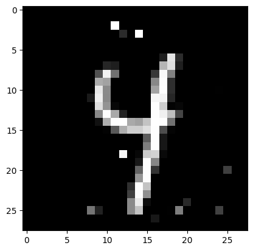

adversarial_mnist
Extra required packages:
matplotlib
pandas
import sys
import gurobipy as gp
import numpy as np
import pandas as pd
from joblib import load
from matplotlib import pyplot as plt
from gurobi_ml import add_predictor_constr
# Load the trained network and the examples
pipe = load("../../../tests/predictors/MNIST_50_50.joblib")
X = load("../../../tests/predictors/MNIST_first100.joblib")
# Choose an example
exampleno = 26
example = X.iloc[exampleno : exampleno + 1, :]
ex_prob = pipe.predict_proba(example)
output_shape = ex_prob.shape
pixels = example.to_numpy().reshape((28, 28))
plt.imshow(pixels, cmap="gray")
plt.show()

pipe.predict(example)
array(['4'], dtype='<U1')
sortedidx = np.argsort(ex_prob)[0]
m = gp.Model()
epsilon = 5
x = m.addMVar(example.shape, lb=0.0, ub=1.0, name="X")
absdiff = m.addMVar(example.shape, lb=0, ub=1, name="dplus")
output = m.addMVar(output_shape, lb=-gp.GRB.INFINITY, name="y")
Gurobi 10.0.0 (beta1) - expires 2022-11-21
m.setObjective(output[0, sortedidx[-2]] - output[0, sortedidx[-1]], gp.GRB.MAXIMIZE)
# Bound on the distance to example in norm-1
m.addConstr(absdiff[0, :] >= x[0, :] - example.to_numpy()[0, :])
m.addConstr(absdiff[0, :] >= -x[0, :] + example.to_numpy()[0, :])
m.addConstr(absdiff[0, :].sum() <= epsilon)
<() matrix constraint *awaiting model update*>
# Change last layer activation to identity
pipe.steps[-1][1].out_activation_ = "identity"
# Code to add the neural network to the constraints
ml2grb = add_predictor_constr(m, pipe, x, output)
# Restore activation
pipe.steps[-1][1].out_activation_ = "softmax"
Warning for adding constraints: zero or small (< 1e-13) coefficients, ignored
ml2grb.print_stats()
Model for PipelineConstr1:
200 variables
110 constraints
100 general constraints
Input has shape (1, 784)
Output has shape (1, 10)
Pipeline has 1 steps:
mlpclassifier1
Model for mlpclassifier1:
200 variables
110 constraints
100 general constraints
Input has shape (1, 784)
Output has shape (1, 10)
mlpclassifier1 has 3 layers:
Model for layer0:
100 variables
50 constraints
50 general constraints
Input has shape (1, 784)
Output has shape (1, 50)
Activation is relu
Model for layer1:
100 variables
50 constraints
50 general constraints
Input has shape (1, 50)
Output has shape (1, 50)
Activation is relu
Model for layer2:
0 variables
10 constraints
Input has shape (1, 50)
Output has shape (1, 10)
Activation is identity
m.Params.OutputFlag = 1
m.Params.TimeLimit = 25
m.Params.BestBdStop = 0.0
m.Params.BestObjStop = 0.0
m.optimize()
Set parameter TimeLimit to value 25
Set parameter BestBdStop to value 0
Set parameter BestObjStop to value 0
Gurobi Optimizer version 10.0.0 build v10.0.0beta1 (mac64[x86])
CPU model: Intel(R) Core(TM) i5-1038NG7 CPU @ 2.00GHz
Thread count: 4 physical cores, 8 logical processors, using up to 8 threads
Optimize a model with 1679 rows, 1778 columns and 41886 nonzeros
Model fingerprint: 0x5c441955
Model has 100 general constraints
Variable types: 1778 continuous, 0 integer (0 binary)
Coefficient statistics:
Matrix range [1e-13, 2e+00]
Objective range [1e+00, 1e+00]
Bounds range [1e+00, 1e+00]
RHS range [5e-03, 5e+00]
Presolve removed 1244 rows and 728 columns
Presolve time: 0.11s
Presolved: 435 rows, 1050 columns, 37955 nonzeros
Variable types: 969 continuous, 81 integer (76 binary)
Root relaxation: objective 2.043941e+03, 307 iterations, 0.01 seconds (0.01 work units)
Nodes | Current Node | Objective Bounds | Work
Expl Unexpl | Obj Depth IntInf | Incumbent BestBd Gap | It/Node Time
0 0 2043.94128 0 54 - 2043.94128 - - 0s
0 0 1897.57636 0 56 - 1897.57636 - - 0s
0 0 1896.49495 0 56 - 1896.49495 - - 0s
0 0 1482.45016 0 55 - 1482.45016 - - 0s
0 0 1450.37640 0 58 - 1450.37640 - - 0s
0 0 1448.89827 0 57 - 1448.89827 - - 0s
0 0 1448.89475 0 57 - 1448.89475 - - 0s
0 0 1112.77985 0 63 - 1112.77985 - - 0s
0 0 1065.67917 0 62 - 1065.67917 - - 0s
0 0 1059.91754 0 63 - 1059.91754 - - 0s
0 0 1059.79205 0 63 - 1059.79205 - - 0s
0 0 923.09348 0 63 - 923.09348 - - 0s
0 0 892.67944 0 64 - 892.67944 - - 0s
0 0 891.26578 0 64 - 891.26578 - - 0s
0 0 890.31741 0 65 - 890.31741 - - 0s
0 0 890.25318 0 65 - 890.25318 - - 0s
0 0 837.17798 0 70 - 837.17798 - - 0s
0 0 817.18410 0 69 - 817.18410 - - 0s
0 0 813.64600 0 69 - 813.64600 - - 0s
0 0 812.98647 0 69 - 812.98647 - - 0s
0 0 685.35456 0 71 - 685.35456 - - 1s
0 0 677.98993 0 70 - 677.98993 - - 1s
0 0 677.26643 0 70 - 677.26643 - - 1s
0 0 613.10331 0 67 - 613.10331 - - 1s
0 0 601.69584 0 69 - 601.69584 - - 1s
0 0 600.79638 0 69 - 600.79638 - - 1s
0 0 592.44202 0 70 - 592.44202 - - 1s
0 0 588.88877 0 69 - 588.88877 - - 1s
0 0 587.87876 0 71 - 587.87876 - - 1s
0 0 532.17511 0 71 - 532.17511 - - 1s
0 0 522.52872 0 71 - 522.52872 - - 1s
0 0 521.51021 0 71 - 521.51021 - - 1s
0 0 475.43240 0 71 - 475.43240 - - 1s
0 0 473.06311 0 71 - 473.06311 - - 1s
0 0 472.56686 0 71 - 472.56686 - - 1s
0 0 468.51596 0 71 - 468.51596 - - 1s
H 0 0 -19.5745944 468.51596 2493% - 1s
0 0 468.51596 0 71 -19.57459 468.51596 2493% - 1s
0 2 468.51596 0 71 -19.57459 468.51596 2493% - 1s
* 270 232 53 0.4709289 354.13155 - 54.3 2s
Cutting planes:
Gomory: 1
Implied bound: 9
MIR: 110
Flow cover: 78
Relax-and-lift: 1
Explored 275 nodes (18426 simplex iterations) in 2.68 seconds (5.28 work units)
Thread count was 8 (of 8 available processors)
Solution count 2: 0.470929 -19.5746
Optimization achieved user objective limit
Best objective 4.709289733611e-01, best bound 3.541315550317e+02, gap 75098.5066%
pixels = x.X.reshape((28, 28))
plt.imshow(pixels, cmap="gray")
plt.show()

example_mod = pd.DataFrame(data=x.X, columns=example.columns, index=example.index)
pipe.predict(example_mod)
array(['9'], dtype='<U1')
copyright © 2022 Gurobi Optimization, LLC